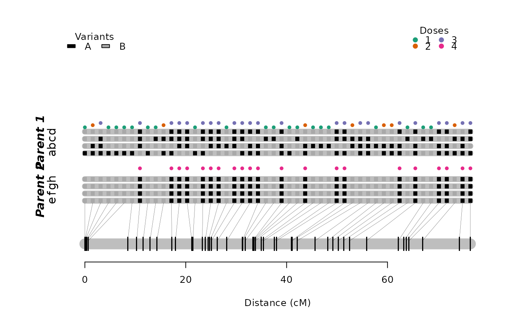

R/calc_genoprob_single_parent.R
calc_genoprob_single_parent.RdConditional genotype probabilities are calculated for each marker position and each individual given a map
calc_genoprob_single_parent(
input.map,
step = 0,
info.parent = 1,
uninfo.parent = 2,
global.err = 0,
phase.config = "best",
verbose = TRUE
)An object of class mappoly.map (with exceptions)
Maximum distance (in cM) between positions at which the genotype probabilities are calculated, though for step = 0, probabilities are calculated only at the marker locations.
index for informative parent
index for uninformative parent
the assumed global error rate (default = 0.0)
which phase configuration should be used. "best" (default) will choose the phase configuration associated with the maximum likelihood
if TRUE (default), current progress is shown; if
FALSE, no output is produced
An object of class 'mappoly.genoprob' which has two elements: a tridimensional array containing the probabilities of all possible genotypes for each individual in each marker position; and the marker sequence with it's recombination frequencies
Mollinari, M., and Garcia, A. A. F. (2019) Linkage analysis and haplotype phasing in experimental autopolyploid populations with high ploidy level using hidden Markov models, _G3: Genes, Genomes, Genetics_. doi:10.1534/g3.119.400378
## tetraploid example
s <- make_seq_mappoly(tetra.solcap, 'seq1', info.parent = "p1")
tpt <- est_pairwise_rf(s)
#> INFO: Going singlemode. Using one CPU for calculation.
map <- est_rf_hmm_sequential(input.seq = s,
twopt = tpt,
start.set = 10,
thres.twopt = 10,
thres.hmm = 10,
extend.tail = 4,
info.tail = TRUE,
sub.map.size.diff.limit = 8,
phase.number.limit = 20,
reestimate.single.ph.configuration = TRUE,
tol = 10e-2,
tol.final = 10e-3)
#> Number of markers: 96
#> ════════════════════════════════════════════════════════════ Initial sequence ══
#> 10 markers...
#> • Trying sequence: 1 2 3 4 5 6 7 8 9 10 :
#> 8 phase(s): . . . . . . . .
#> • Trying sequence: 2 3 4 5 6 7 8 9 10 11 :
#> 8 phase(s): . . . . . . . .
#> • Trying sequence: 3 4 5 6 7 8 9 10 11 12 :
#> 2 phase(s): . .
#> ══════════════════════════════════════════════════ Done with initial sequence ══
#> 11/13:(13.5%) 117: 1 ph (1/1) -- tail: 4 •||• ||||
#> 12/14:(14.6%) 120: 1 ph (1/1) -- tail: 5 |••| ||||
#> 13/15:(15.6%) 121: 1 ph (1/1) -- tail: 6 |••| ||||
#> 14/16:(16.7%) 122: 1 ph (1/1) -- tail: 7 |••| ||||
#> 15/17:(17.7%) 134: 1 ph (1/1) -- tail: 8 ||•| ||||
#> 16/18:(18.8%) 141: 1 ph (1/1) -- tail: 9 |••| ||||
#> 17/19:(19.8%) 150: 4 ph (1/4) -- tail: 10 •||| •••• ... |•|| ••••
#> 19: not included (~map extension~)
#> 17/20:(20.8%) 159: 1 ph (1/1) -- tail: 10 |••| ||||
#> 18/21:(21.9%) 165: 1 ph (1/1) -- tail: 11 |••| ||||
#> 19/22:(22.9%) 169: 1 ph (1/1) -- tail: 12 |••| ||||
#> 20/23:(24%) 173: 1 ph (1/1) -- tail: 13 |••| ||||
#> 21/24:(25%) 178: 1 ph (1/1) -- tail: 14 |••| ||||
#> 22/25:(26%) 182: 1 ph (1/1) -- tail: 15 |••| ||||
#> 23/26:(27.1%) 186: 1 ph (1/1) -- tail: 16 |••| ||||
#> 24/27:(28.1%) 188: 1 ph (1/1) -- tail: 17 |••| ||||
#> 25/28:(29.2%) 189: 1 ph (1/1) -- tail: 18 |••| ||||
#> 26/29:(30.2%) 194: 1 ph (1/1) -- tail: 19 ||•| ||||
#> 27/30:(31.2%) 213: 1 ph (1/1) -- tail: 20 ••|• ••••
#> 28/31:(32.3%) 215: 1 ph (1/1) -- tail: 21 ||•| ||||
#> 29/32:(33.3%) 223: 1 ph (1/1) -- tail: 22 ||•| ||||
#> 30/33:(34.4%) 225: 4 ph (1/4) -- tail: 23 •||| |||| ... |•|| ||||
#> 31/34:(35.4%) 226: 1 ph (1/1) -- tail: 24 •|•• ••••
#> 32/35:(36.5%) 229: 1 ph (1/1) -- tail: 25 |•|| ||||
#> 33/36:(37.5%) 230: 1 ph (1/1) -- tail: 26 |•|| ||||
#> 34/37:(38.5%) 232: 1 ph (1/1) -- tail: 27 ||•• ••••
#> 35/38:(39.6%) 236: 1 ph (1/1) -- tail: 6 ••|| ||||
#> 36/39:(40.6%) 237: 1 ph (1/1) -- tail: 7 ••|| ||||
#> 37/40:(41.7%) 240: 1 ph (1/1) -- tail: 8 ||•• ||||
#> 38/41:(42.7%) 243: 1 ph (1/1) -- tail: 9 ||•• ||||
#> 39/42:(43.8%) 244: 1 ph (1/1) -- tail: 10 ||•• ||||
#> 40/43:(44.8%) 245: 1 ph (1/1) -- tail: 11 ||•• ||||
#> 41/44:(45.8%) 246: 1 ph (1/1) -- tail: 12 ••|| ||||
#> 42/45:(46.9%) 247: 1 ph (1/1) -- tail: 13 ||•| ||||
#> 43/46:(47.9%) 249: 1 ph (1/1) -- tail: 10 ||•• ||||
#> 44/47:(49%) 259: 1 ph (1/1) -- tail: 11 ••|| ||||
#> 45/48:(50%) 262: 1 ph (1/1) -- tail: 12 ••|| ||||
#> 46/49:(51%) 263: 2 ph (1/2) -- tail: 13 •||| |||| |•|| ||||
#> 47/50:(52.1%) 273: 2 ph (1/2) -- tail: 5 |••| |||| |•|• ||||
#> 48/51:(53.1%) 282: 1 ph (1/1) -- tail: 4 |••| ||||
#> 49/52:(54.2%) 283: 1 ph (1/1) -- tail: 4 ••|• ••••
#> 50/53:(55.2%) 284: 1 ph (1/1) -- tail: 4 ||•| ||||
#> 51/54:(56.2%) 285: 1 ph (1/1) -- tail: 5 ||•| ||||
#> 52/55:(57.3%) 296: 2 ph (1/2) -- tail: 6 ••|| |||| |•|• ||||
#> 53/56:(58.3%) 297: 1 ph (1/1) -- tail: 5 |||• ||||
#> 54/57:(59.4%) 298: 1 ph (1/1) -- tail: 4 •••| ••••
#> 55/58:(60.4%) 299: 1 ph (1/1) -- tail: 4 |||• ||||
#> 56/59:(61.5%) 300: 1 ph (1/1) -- tail: 5 •••| ••••
#> 57/60:(62.5%) 301: 1 ph (1/1) -- tail: 6 |||• ||||
#> 58/61:(63.5%) 303: 1 ph (1/1) -- tail: 7 |||• ||||
#> 59/62:(64.6%) 304: 1 ph (1/1) -- tail: 8 ||•| ||||
#> 60/63:(65.6%) 306: 1 ph (1/1) -- tail: 8 |||• ||||
#> 61/64:(66.7%) 307: 2 ph (1/2) -- tail: 9 •••| •••• •|•• ••••
#> 62/65:(67.7%) 309: 1 ph (1/1) -- tail: 4 ||•• ||||
#> 63/66:(68.8%) 313: 1 ph (1/1) -- tail: 4 ||•• ||||
#> 64/67:(69.8%) 314: 1 ph (1/1) -- tail: 4 ||•• ||||
#> 65/68:(70.8%) 315: 2 ph (1/2) -- tail: 5 •|•• •••• |••• ••••
#> 66/69:(71.9%) 316: 1 ph (1/1) -- tail: 6 ||•• ||||
#> 67/70:(72.9%) 317: 1 ph (1/1) -- tail: 7 ||•• ||||
#> 68/71:(74%) 318: 1 ph (1/1) -- tail: 8 ••|| ••••
#> 69/72:(75%) 319: 1 ph (1/1) -- tail: 9 •||| ||||
#> 70/73:(76%) 320: 1 ph (1/1) -- tail: 10 •||| ||||
#> 71/74:(77.1%) 324: 1 ph (1/1) -- tail: 11 ||•• ||||
#> 72/75:(78.1%) 328: 1 ph (1/1) -- tail: 12 •||| ||||
#> 73/76:(79.2%) 338: 1 ph (1/1) -- tail: 13 •••| ••••
#> 74/77:(80.2%) 348: 4 ph (1/4) -- tail: 4 •••| •••• ... ••|• ••••
#> 75/78:(81.2%) 349: 1 ph (1/1) -- tail: 4 |||• ||||
#> 76/79:(82.3%) 350: 1 ph (1/1) -- tail: 4 |||• ||||
#> 77/80:(83.3%) 376: 1 ph (1/1) -- tail: 5 |••• ••••
#> 78/81:(84.4%) 377: 1 ph (1/1) -- tail: 4 ••|• ••••
#> 79/82:(85.4%) 382: 1 ph (1/1) -- tail: 4 |||• ||||
#> 80/83:(86.5%) 384: 1 ph (1/1) -- tail: 4 ••|• ••••
#> 81/84:(87.5%) 389: 3 ph (1/3) -- tail: 4 ••|| |||| ... •|•| ||||
#> 82/85:(88.5%) 391: 1 ph (1/1) -- tail: 4 •||• ||||
#> 83/86:(89.6%) 393: 1 ph (1/1) -- tail: 4 |••| ••••
#> 84/87:(90.6%) 397: 1 ph (1/1) -- tail: 5 ••|• ••••
#> 85/88:(91.7%) 398: 1 ph (1/1) -- tail: 6 •||• ||||
#> 86/89:(92.7%) 399: 1 ph (1/1) -- tail: 7 ••|• ••••
#> 87/90:(93.8%) 403: 2 ph (1/2) -- tail: 8 •••| •••• |••• ••••
#> 88/91:(94.8%) 414: 4 ph (1/4) -- tail: 4 •••| |||| ... ••|• ||||
#> 89/92:(95.8%) 418: 1 ph (1/1) -- tail: 4 |•|| ••••
#> 90/93:(96.9%) 419: 1 ph (1/1) -- tail: 4 |•|| ••••
#> 91/94:(97.9%) 437: 1 ph (1/1) -- tail: 5 •|•• ||||
#> 92/95:(99%) 440: 1 ph (1/1) -- tail: 6 |•|| ••••
#> 93/96:(100%) 453: 3 ph (1/3) -- tail: 7 •|•| |||| ... •||• ||||
#> ══════════════════════════════════ Reestimating final recombination fractions ══
#> Markers in the initial sequence: 96
#> Mapped markers : 93 (96.9%)
#> ════════════════════════════════════════════════════════════════════════════════
plot(map)

probs <- calc_genoprob_single_parent(input.map = map,
info.parent = 1,
uninfo.parent = 2,
step = 1)
#> Ploidy level: 4
#> Number of markers: 235
#> Number of individuals: 160
#>
probs
#> This is an object of class 'mappoly.genoprob'
#> -----------------------------------------------------
#> No. genotypic classes: 6
#> No. positions: 235
#> No. individuals: 160
#> -----------------------------------------------------
## displaying individual 1, 6 genotypic states
## (rows) across linkage group 1 (columns)
image(t(probs$probs[,,2]))